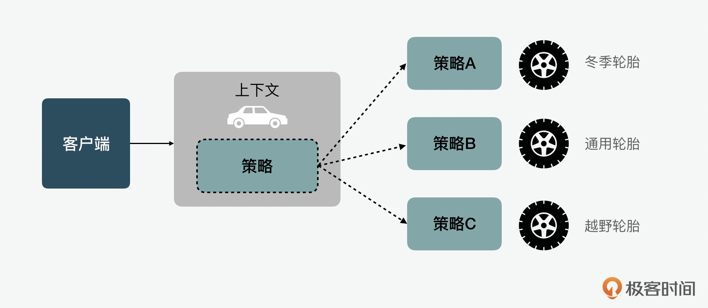
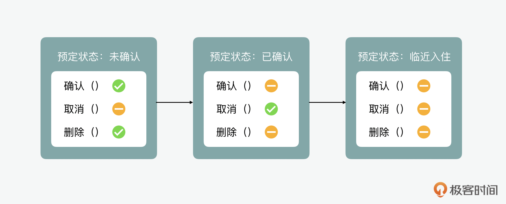
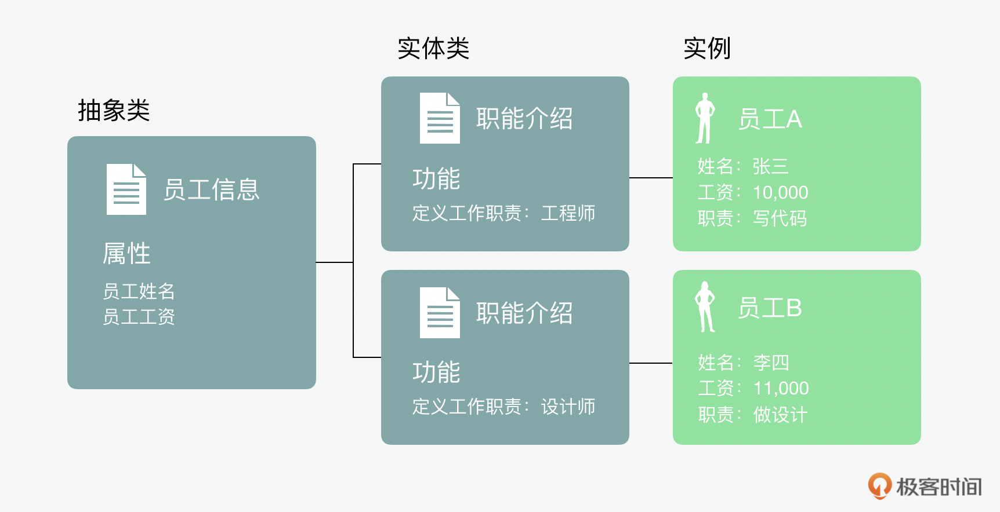
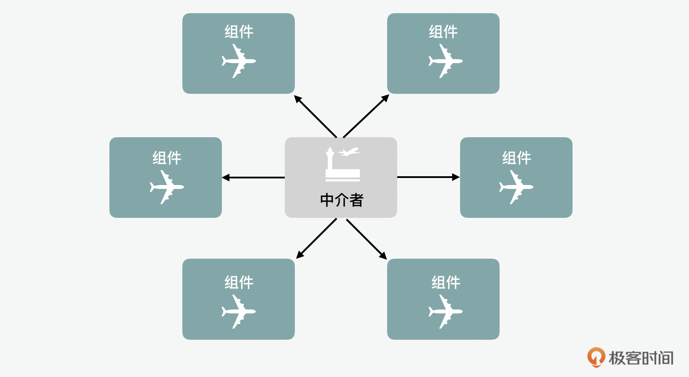
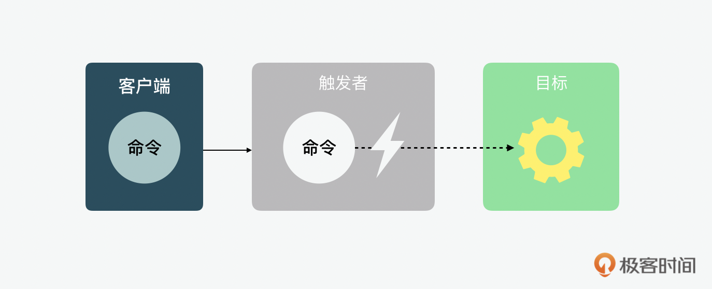
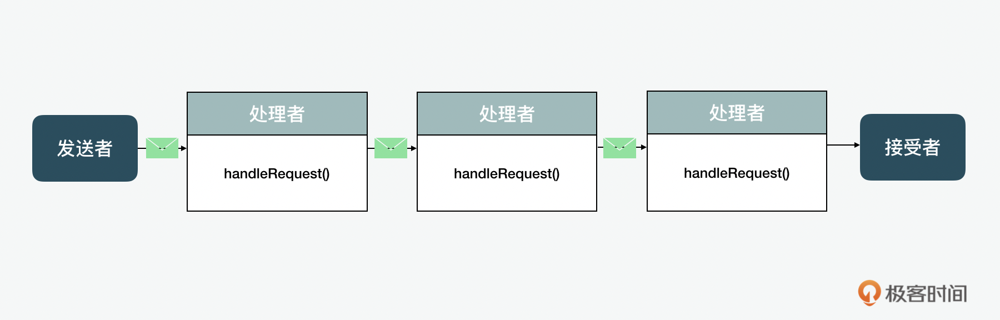

- 00 开篇词 JavaScript的进阶之路.md.html
- 01 函数式vs.面向对象：响应未知和不确定.md.html
- 02 如何通过闭包对象管理程序中状态的变化？.md.html
- 03 如何通过部分应用和柯里化让函数具象化？.md.html
- 04 如何通过组合、管道和reducer让函数抽象化？.md.html
- 05 map、reduce和monad如何围绕值进行操作？.md.html
- 06 如何通过模块化、异步和观察做到动态加载？.md.html
- 07 深入理解对象的私有和静态属性.md.html
- 08 深入理解继承、Delegation和组合.md.html
- 09 面向对象：通过词法作用域和调用点理解this绑定.md.html
- 10 JS有哪8种数据类型，你需要注意什么？.md.html
- 11 通过JS引擎的堆栈了解闭包原理.md.html
- 12 JS语义分析该用迭代还是递归？.md.html
- 13 JS引擎如何实现数组的稳定排序？.md.html
- 14 通过SparkPlug深入了解调用栈.md.html
- 15 如何通过哈希查找JS对象内存地址？.md.html
- 16 为什么环形队列适合做Node数据流缓存？.md.html
- 17 如何通过链表做LRU_LFU缓存？.md.html
- 18 TurboFan如何用图做JS编译优化？.md.html
- 19 通过树和图看如何在无序中找到路径和秩序.md.html
- 20 算法思想：JS中分治、贪心、回溯和动态规划.md.html
- 21 创建型：为什么说Redux可以替代单例状态管理.md.html
- 22 结构型：Vue.js如何通过代理实现响应式编程.md.html
- 23 结构型：通过jQuery看结构型模式.md.html
- 24 行为型：通过观察者、迭代器模式看JS异步回调.md.html
- 25 行为型：模版、策略和状态模式有什么区别？.md.html
- 26 特殊型：前端有哪些处理加载和渲染的特殊“模式”？.md.html
- 27 性能：如何理解JavaScript中的并行、并发？（上）.md.html
- 28 性能：如何理解JavaScript中的并行、并发？（下）.md.html
- 29 性能：通过Orinoco、Jank Busters看垃圾回收.md.html
- 30 网络：从HTTP_1到HTTP_3，你都需要了解什么？.md.html
- 31 安全：JS代码和程序都需要注意哪些安全问题？.md.html
- 32 测试（一）：开发到重构中的测试.md.html
- 33 测试（二）：功能性测试.md.html
- 34 测试（三）：非功能性测试.md.html
- 35 静态类型检查：ESLint语法规则和代码风格的检查.md.html
- 36 Flow：通过Flow类看JS的类型检查.md.html
- 37 包管理和分发：通过NPM做包的管理和分发.md.html
- 38 编译和打包：通过Webpack、Babel做编译和打包.md.html
- 39 语法扩展：通过JSX来做语法扩展.md.html
- 40 Polyfill：通过Polyfill让浏览器提供原生支持.md.html
- 41 微前端：从MVC贫血模式到DDD充血模式.md.html
- 42 大前端：通过一云多端搭建跨PC_移动的平台应用.md.html
- 43 元编程：通过Proxies和Reflect赋能元编程.md.html
- 结束语 JavaScript的未来之路：源于一个以终为始的初心.md.html
- 捐赠
25 行为型：模版、策略和状态模式有什么区别？
你好，我是石川。
今天我们来说说设计模式中剩下的几种行为型模式。我个人觉得剩下这六种模式可以大致分为两类，一类是偏向“策略模型”的设计模式，这里包含了策略、状态和模版这三种模式。另外一大类是偏向“数据传递”的设计模式，这里就包含了中介、命令和职责链这几种模式。这些类别的模式，有什么共同和不同呢？我们先从它们各自的思想和实现来看看。
策略模型类的行为模式
首先，我们来看看策略、状态和模版这三种偏向“策略模型”的设计模式吧。
策略模式
先说策略模式（strategy），它的核心思想是在运行时基于场景选择策略。
我们可以举一个例子，我们的汽车轮胎适配就算是一种策略模式，比如在冰天雪地的西伯利亚，可以选择冬季轮胎；如果是平时用的买菜车，就选择普通轮胎；如果是去草原狂奔，就换上越野轮胎。

下面，我们可以通过一个红绿灯程序来看一下这一概念的实现。在这个例子中，我们可以看到 交通控制（TrafficControl）就决定了运行时环境的上下文，它可以通过转换（ turn ）这个方法来切换不同的策略。红绿灯（TrafficLight）是一个抽象类的策略，它可以根据环境需要，延伸出具体类的策略。
// encapsulation
class TrafficControl {
turn(trafficlight) {
return trafficlight.trafficcolor();
}
}
class TrafficLight {
trafficcolor() {
return this.colorDesc;
}
}
// strategy 1
class RedLight extends TrafficLight {
constructor() {
super();
this.colorDesc = "Stop";
}
}
// strategy 2
class YellowLight extends TrafficLight {
constructor() {
super();
this.colorDesc = "Wait";
}
}
// strategy 3
class GreenLight extends TrafficLight {
constructor() {
super();
this.colorDesc = "Go";
}
}
// usage
var trafficControl = new TrafficControl();
console.log(trafficControl.turn(new RedLight())); // Stop
console.log(trafficControl.turn(new YellowLight())); // Wait
console.log(trafficControl.turn(new GreenLight())); // Go
状态模式
下面我们再来看看状态模式（state），它的核心概念是根据运行时状态的不同，切换不同的策略。所以我们可以说它是策略模式的一个延伸。
这里，我们可以拿酒店预定举个例子，比如我们都有在一些文旅类门户网站上预定酒店的经验。在预定的时候，通常有几种不同的状态，比如当我们下单支付前，订单状态可能是“未确认”，这时我们可以确认或删除，但是因为还没有预定成功，所以没有取消的选项。但是当我们已确认并完成支付，就没有再次确认或删除的动作了，这时，我们只能选择取消。再然后，一般很多酒店都规定只能在入住前24小时选择取消，而如果在临近入住的24小时之内，那么在这个区间内连取消的按钮可能都失效了。这时，我们只能选择入住或和客服沟通取消。这就是状态模式，也就是说程序依据不同运行时状态，做不同的策略反应。

同样，我们可以通过讲策略模式时的红绿灯案例做一些改造，加入状态 state，看看会发生什么。这里，我们可以看到每次当我们执行turn在做切换的时候，随着状态在红、黄、绿三种状态之间循环更新，红绿灯的指示也跟着更新。
class TrafficControl {
constructor() {
this.states = [new GreenLight(), new RedLight(), new YellowLight()];
this.current = this.states[0];
}
turn() {
const totalStates = this.states.length;
let currentIndex = this.states.findIndex(light => light === this.current);
if (currentIndex + 1 < totalStates) this.current = this.states[currentIndex + 1];
else this.current = this.states[0];
}
desc() {
return this.current.desc();
}
}
class TrafficLight {
constructor(light) {
this.light = light;
}
}
class RedLight extends TrafficLight {
constructor() {
super('red');
}
desc() {
return 'Stop';
}
}
class YellowLight extends TrafficLight {
constructor() {
super('yellow');
}
desc() {
return 'Wait';
}
}
class GreenLight extends TrafficLight {
constructor() {
super('green');
}
desc() {
return 'Go';
}
}
// usage
var trafficControl = new TrafficControl();
console.log(trafficControl.desc()); // 'Go'
trafficControl.turn();
console.log(trafficControl.desc()); // 'Stop'
trafficControl.turn();
console.log(trafficControl.desc()); // 'Wait'
模版模式
最后，我们再来看看模版模式（template）。它的核心思想是在一个方法中定义一个业务逻辑模版，并将某些步骤推迟到子类中实现。所以它和策略模式有些类似。

下面我们可以看一个实现的例子。在这个例子里，我们看到员工employee里的工作work就是一个模版，它里面的任务tasks是延迟到开发developer和设计designer两个子类中去实现的。这就是一个简单的模版模式的设计实现。
class Employee {
constructor(name, salary) {
this.name = name;
this.salary = salary;
}
work() {
return `${this.name}负责${this.tasks()}`;
}
getPaid() {
return `${this.name}薪资是${this.salary}`;
}
}
class Developer extends Employee {
constructor(name, salary) {
super(name, salary);
}
// 细节由子类实现
tasks() {
return '写代码';
}
}
class Designer extends Employee {
constructor(name, salary) {
super(name, salary);
}
// 细节由子类实现
tasks() {
return '做设计';
}
}
// usage
var dev = new Developer('张三', 10000);
console.log(dev.getPaid()); // '张三薪资是10000'
console.log(dev.work()); // '张三负责写代码'
var designer = new Designer('李四', 11000);
console.log(designer.getPaid()); // '李四薪资是11000'
console.log(designer.work()); // '李四负责做设计'
这里我先做个阶段性小结，从上面的例子中，我们可以看出，无论是策略、状态还是模版模式，它们都是基于某种“策略模型”来实现的。比如策略模式中的策略是基于上行文来切换；在状态模式中是根据状态来做切换；而最后在模版模式的例子中，某些策略模版在父类中定义，有些则在子类中实现。
信息传递类的行为模式
中介模式
中介者（mediator）模式的核心是使组件可以通过一个中心点相互交互。现实生活中，航空地面塔台就是一个例子，我们不可能让飞机之间交谈，而是通过地面控制台协调。地面塔台人员需要确保所有飞机都接收到安全飞行所需的信息，而不会撞到其他飞机。

我们还是通过一段代码，来看看这种模式的实现。塔台（TrafficTower）有着接收每架飞机坐标和获取某架飞机坐标方法。同时，飞机会登记自己的坐标和获取其它飞机的坐标。这些信息都是统一由塔台（TrafficTower）来管理的。
class TrafficTower {
#airplanes;
constructor() {
this.#airplanes = [];
}
register(airplane) {
this.#airplanes.push(airplane);
airplane.register(this);
}
requestCoordinates(airplane) {
return this.#airplanes.filter(plane => airplane !== plane).map(plane => plane.coordinates);
}
}
class Airplane {
constructor(coordinates) {
this.coordinates = coordinates;
this.trafficTower = null;
}
register(trafficTower) {
this.trafficTower = trafficTower;
}
requestCoordinates() {
if (this.trafficTower) return this.trafficTower.requestCoordinates(this);
return null;
}
}
// usage
var tower = new TrafficTower();
var airplanes = [new Airplane(10), new Airplane(20), new Airplane(30)];
airplanes.forEach(airplane => {
tower.register(airplane);
});
console.log(airplanes.map(airplane => airplane.requestCoordinates()))
// [[20, 30], [10, 30], [10, 20]]
命令模式
说完中介模式，我们再来看看命令模式，命令模式（command）允许我们将命令和发起命令操作的对象分离，这么做的好处是对于处理具有特定生命周期或者列队执行的命令，它会给我们更多的控制权。并且它还提供了将方法调用作为传参的能力，这样做的好处是可以让方法按需执行。

下面我们可以看看这种模式的样例。事务管理者OperationManager 接到了执行任务，会根据不同的命令，如启动行动（StartOperationCommand）、追踪行动状态（TrackOperationCommand）及取消行动CancelOperationCommand 等来执行。
class OperationManager {
constructor() {
this.operations = [];
}
execute(command, ...args) {
return command.execute(this.operations, ...args);
}
}
class Command {
constructor(execute) {
this.execute = execute;
}
}
function StartOperationCommand(operation, id) {
return new Command(operations => {
operations.push(id);
console.log(`你成功的启动了${operation}行动，代号${id}`);
});
}
function CancelOperationCommand(id) {
return new Command(operations => {
operations = operations.filter(operation => operation.id !== id);
console.log(`你取消了行动代号${id}`);
});
}
function TrackOperationCommand(id) {
return new Command(() =>
console.log(`你的行动代号${id}，目前正在执行中`)
);
}
var manager = new OperationManager();
manager.execute(new StartOperationCommand("猎豹", "318"));
// 返回：你成功的启动了猎豹行动，代号318
manager.execute(new TrackOperationCommand("318"));
// 返回：你的行动代号318，目前正在执行中
manager.execute(new CancelOperationCommand("318"));
// 返回：你取消了行动代号318
命令模式可以在许多不同的情况下使用，特别是在创建重交互的UI上，比如编辑器里撤消的操作，因为它可以让UI对象和行为操作做到高度解耦。这种模式也可以用来代替回调函数，这也是因为它更支持模块化地将行为操作在对象之间传递。
职责链模式
最后，再来看下职责链模式，职责链模式（chain of responsibility）核心是将请求的发送者和接收者解耦。它的实现是通过一个对象链，链中的每个对象都可以处理请求或将其传递给下一个对象。其实在我们前面讲享元时，就提到过事件捕获和冒泡，JavaScript 内部就是用这个方式来处理事件捕获和冒泡的。同样在享元例子中，我们也提到过，jQuery 是通过职责链每次返回一个对象来做到的链接式调用。

那么这种职责链是如何实现的呢？其实它的实现并不复杂，通过下面的例子我们可以看一下。你也可以很容易实现一个简化版的链式累加。我们通过累加（CumulativeSum）中的加法（add）可以循环上一个对象的结果和参数相加后的结果，作为返回值传给下一个方法。
class CumulativeSum {
constructor(intialValue = 0) {
this.sum = intialValue;
}
add(value) {
this.sum += value;
return this;
}
}
// usage
var sum = new CumulativeSum();
console.log(sum.add(10).add(2).add(50).sum); // 62
通过上面的三种模式的例子，我们都可以看到数据在不同对象中的传递。中介模式中，我们需要在网状的环境中，信息对多个对象中通过中介进行传输；命令模式中，我们看到了信息在对象和对象之间的传输；而最后，在职责链的模式中，我们又看到了信息在一个流水线中的传输。因此我说它们是偏向“数据传递”的设计模式。
总结
今天，我带你看了几种不同的行为型设计模式。到现在为止，我们所有的经典模式就都讲完了。
这一讲我们看的这些模式除了在JavaScript中会用到以外，在多数其它语言中也都适用，所以算是比较脱离语言本身的几种“普世”模式了。在之后的一讲中，我们会再次看几种在JavaScript中特有的一些设计模式。
思考题
如果你用过 Redux 的话，应该用过它的开发者工具中的时间旅行式调试，它可以将应用程序的状态向前、向后或移动到任意时间点。你知道这个功能的实现用到了今天学到的哪（些）种行为型设计模式吗?
欢迎在留言区分享你的答案、交流学习心得或者提出问题，如果觉得有收获，也欢迎你把今天的内容分享给更多的朋友。我们下期再见！
© 2019 - 2023 Liangliang Lee. Powered by gin and hexo-theme-book.